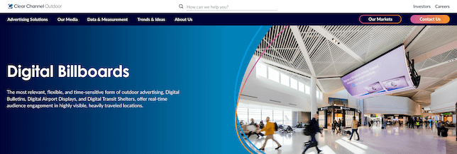

<div id="project">
	<section class="content">
		<div class="block-content">			
			<div class="project-title">
				<h4>ClearChannel</h4>
				<p>Enterprise Web / Distributed System</p>
			</div>
			<p class="project-description">Clear Channel is a multinational out-of-home advertising company that provides a platform for brands to deliver marketing messages to consumers through a diverse portfolio of digital and printed displays, including billboards, bus shelters, and airport ads.
				<br/>As a Solution Consultant at Clear Channel, you were responsible for developing and enabling the "Scheduling" system. This critical platform allowed end consumers to book and display their advertisements across Clear Channel's various media channels.</p>
			<div class="project-media">
				
				
				
				
			</div>        
		</div>
	</section>
 </div>

